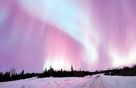
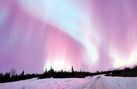

المحتوى
ماهو الشفق القطبيع
يحدث الشفق القطبي عندما تطلق الشمس جسيمات ذات طاقة عالية إلى الأرض،
حيث تتفاعل مع ذرات الغلاف الأيوني الأرضي وتعمل على تنشيطها، مما يتسبب في انبعاث الأضواء بألوان مختلفة أهمها الأحمر والأخضر والأزرق، والذي يتوهج كل منها على ارتفاع معين
 
